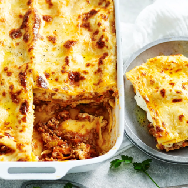

Lasagne

Who doesn't love a good lasagne. This recipe is going to help you
to make the best lasagne you have ever had. If it doesn't then I don't
what I'm doing.
Ingredients
- 500g lasagne sheets
- 2 cups grated parmesan
Bolognese Sauce
- 2 tsp olive oil
- 1 medium brown onion, chopped finely
- 1 trimmed celery stalk, chopped finely
- 600g minced beef
- 2 cloves of garlic, crushed
- 1/4 cup tomato paste
- 800g canned, crushed tomatoes
- 1 medium carrot
- 1 tsp dried oregano leaves
- 1 1/2 cups beef stock
- 1/2 cup coarsely chopped parsley or basil
Bechamel Sauce
- 125g butter
- 3/4 cup plain flour
- 5 cups hot milk
Method
- Make bolognese sauce:
- Heat oil in large heavy-based frying pan over medium
heat;
- Cook onion and celery, stirring, for 10 minutes or
until vegetables soften.
- Add beef; cook, breaking up the lumps with a wooden
spoon, for 5 minutes or until beef changes colour.
- Add garlic and tomato paste; cook, stirring, 1 minute.
- Stir in tomatoes and carrot then oregano and stock;
bring to the boil.
- Reduce heat; simmer, uncovered, for 10 minutes or until
thickened slightly. Stir in parsley.
- Preheat oven to 200°C/400°F. Grease a deep 25cm x 35cm (10-inch
x 14-inch) baking dish.
- Make bechamel sauce:
- Melt butter in a medium saucepan, add flour; stir until
mixture forms a smooth paste.
- Gradually whisk in milk; bring to the boil, whisking,
until sauce boils and thickens. Cool.